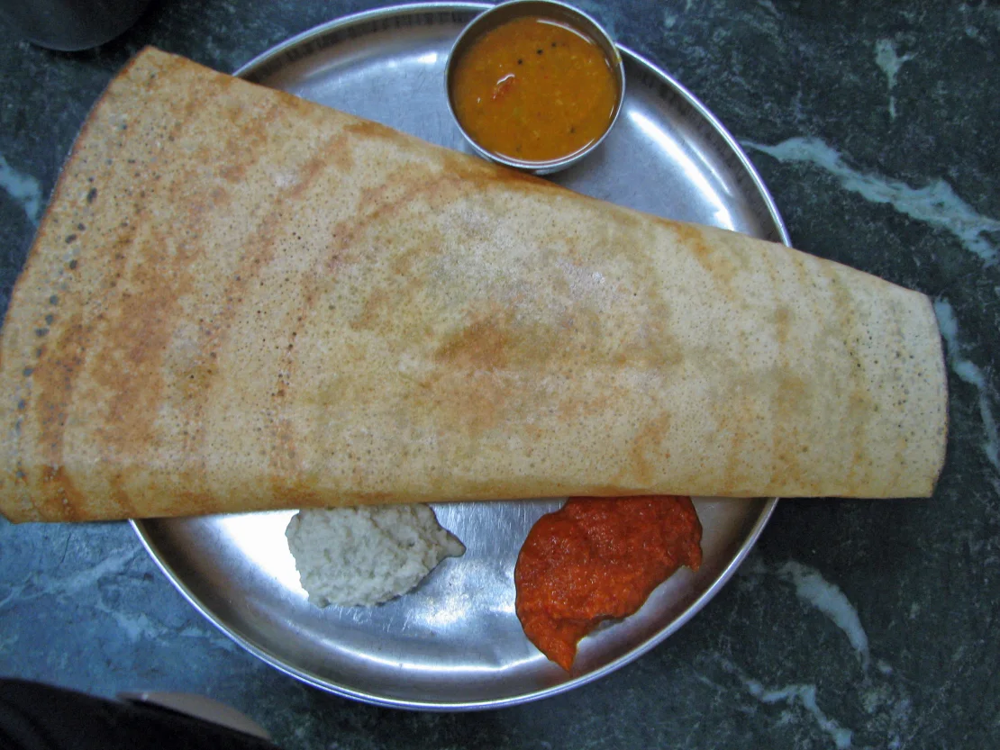
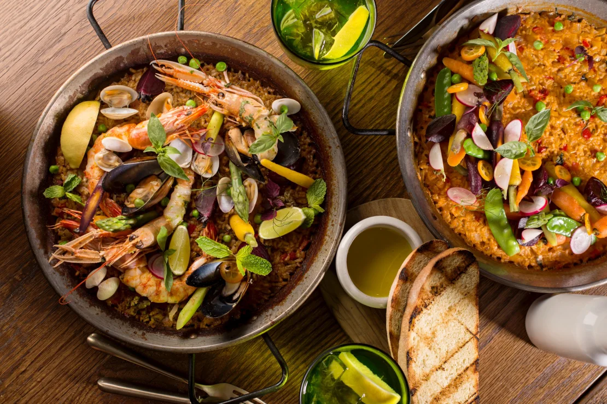
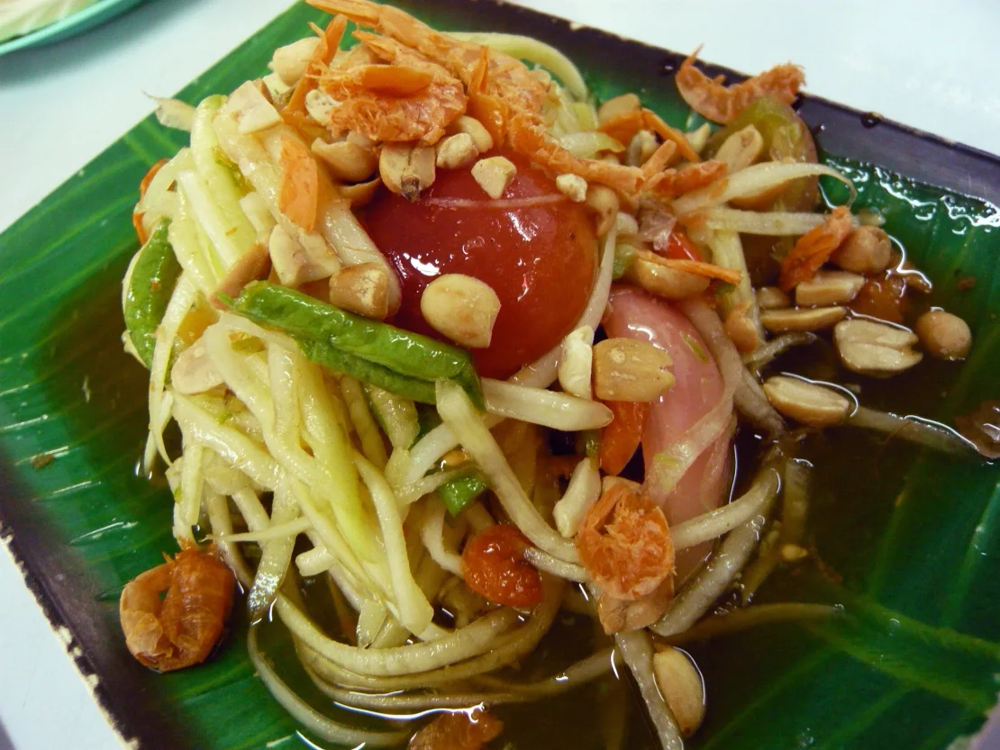
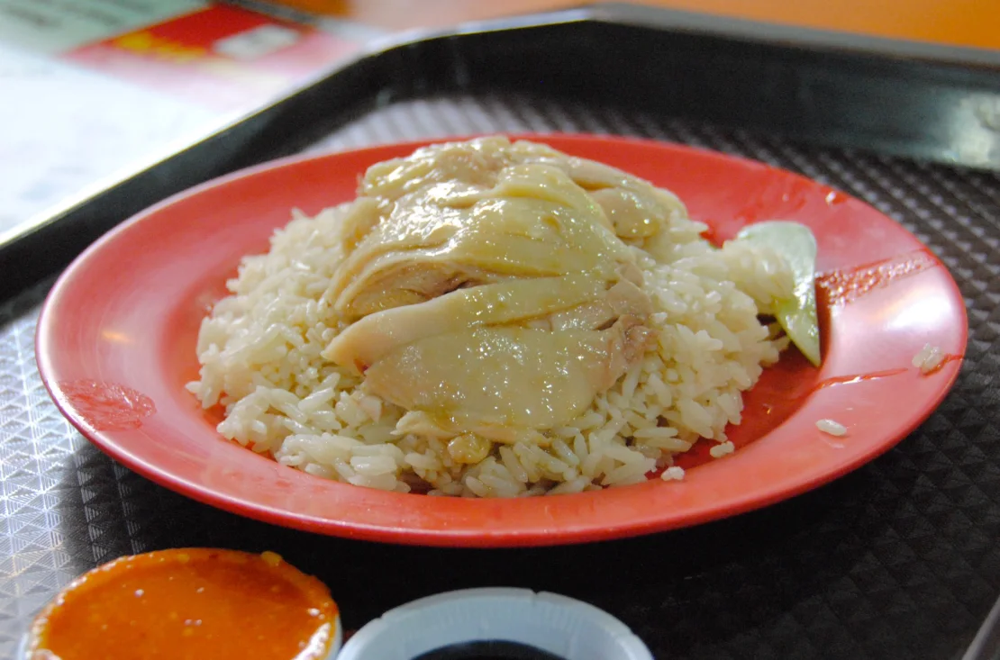
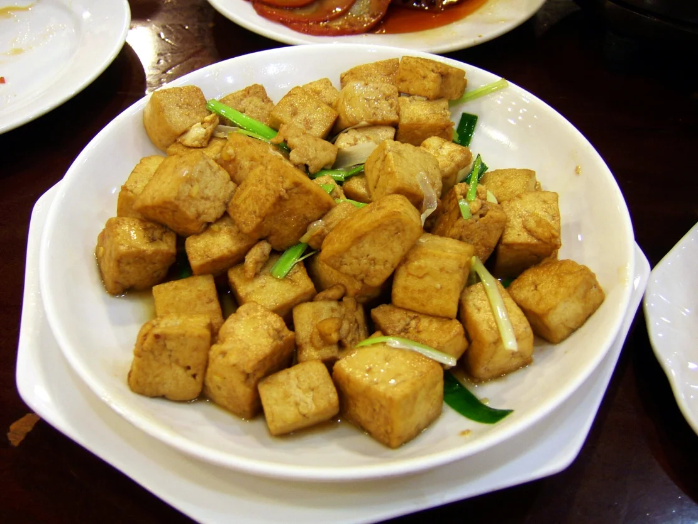
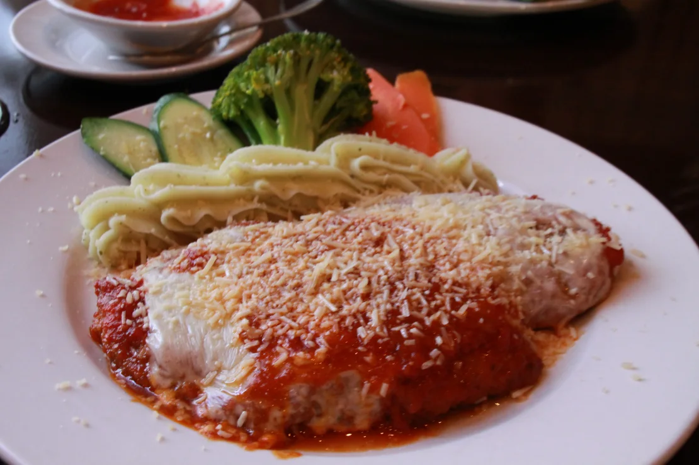
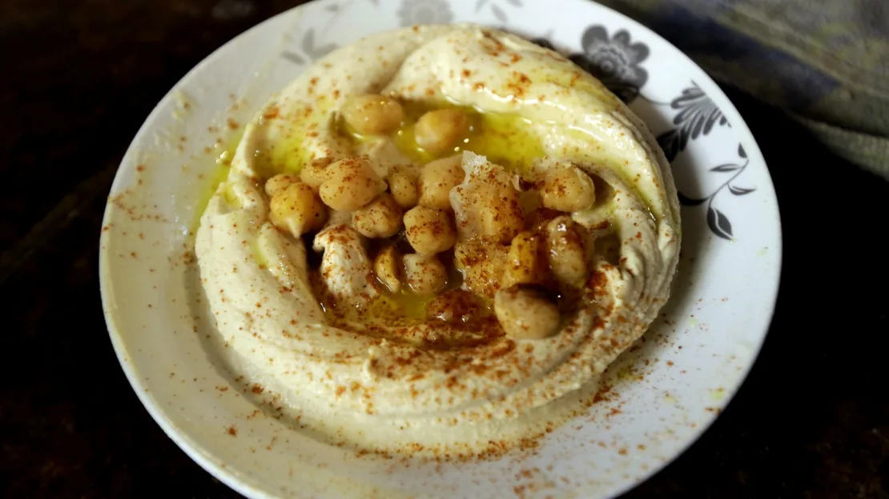
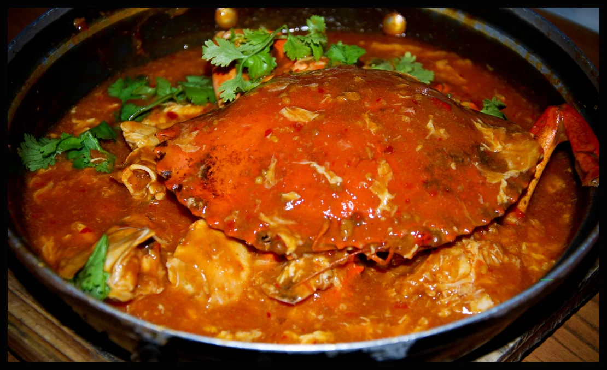
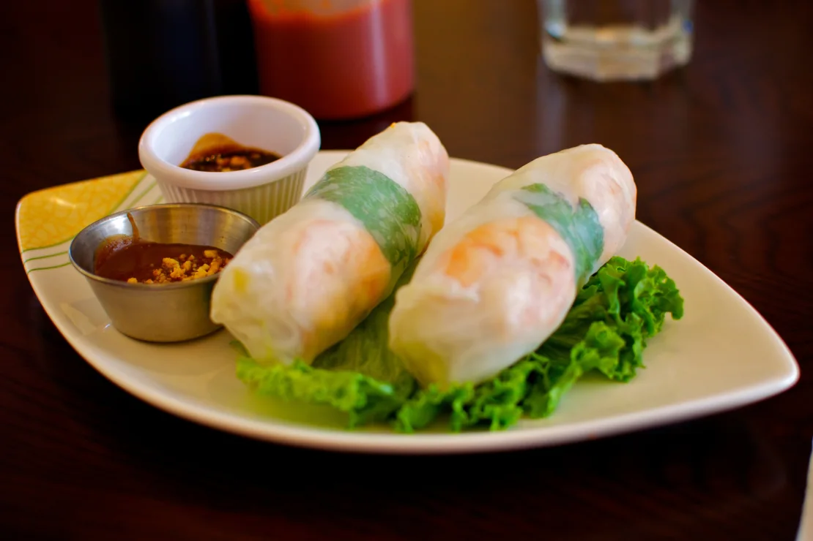

Masala dosa
This is the masala dosa I made! Hope y'all like it!

Paella
I normally only make condriments, but looked too delicious to pass on.

Som tam
This is the best I could do with this thailandese Som Tam, but if at least ...

Chicken rice
Chicken with rice.

Tofu
Made this wonderful Tofu. Looks like it came straight from Asia!

Chicken parm
This chicken parm look just like the one mom made for us when we were kids.

Hummus
This is the best hummus I have ever tasted. Please, make it a part of western cuisine!

Chili crab
I have never eaten a whole sea animal before! No regrets tho...

Goi cuon
I thought this dish was japanese at first, but it turns out it's actually from Vietnam.